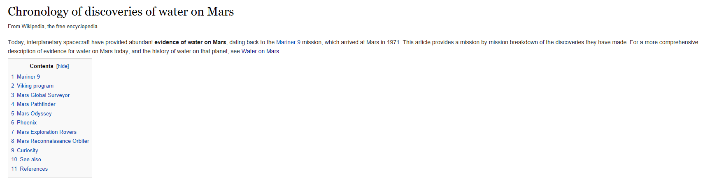

It all started with our search for life in our solar system. Notice how we our number one priority for looking for extraterritorial life is the presence of water. But you probably knew that with the amount of times water has been confirmed on Mars. There is even a Wikipedia article on it:

So there's Mars, but how about Venus. I've always been interested by Earth's Twin which in no way is identical in looks. Is there any water on that planet?
Well, as the above image shows, it's pretty hard to *visibly* tell with the amount of heavy gases present. And its surface doesn't help either:
This looks far from ideal liquid water conditions.
But there's another reason I showed you this photos. To show you the conditions. That, quite obviously, Venus is hot. Way too hot for liquid water to exists on the surface of the planet.
From these 460 degrees Celsius temperatures, any water present on Venus would have just immediately boiled. And, now as a gas, the water would rise into Venus' atmosphere.
When it has travelled up into the atmosphere, the strong sunlight would have spilt the water (H20) molecule into its two components: hydrogen and oxygen.
So we're looking for oxygen and hydrogen in the atmosphere. If we find it there, then we may be able to say water was presence on the planet.
Yet here is where the problem lies. We can't find them in the atmosphere. Hydrogen may have been able to escape from the atmosphere as it a light element. However, oxygen is much heavier and wouldn't have been able to escape by itself. So where is it?
Does this confirm there is no water on Venus? Or could there be another explanation?
What is so different in Venus than means oxygen can't stay in Venus' atmosphere but can stay in Earth's? We call Venus 'Earth's Twin', yet there is one major difference between the two planets which will help: their electric field.
Venus' electric field is 5 times stronger than Earth's. This at first look doesn't make any sense: they are nearly the same size and density:
But we don't actually know why this happens. One theory suggests that it is because Venus is closer to the sun and thus the UV sunlight is 2x as bright. But could the electric field explain a loss of oxygen?
Well it could. Venus' strong magnetic field is strong enough that it is possible for it to literally suck the oxygen from its atmosphere.
As surprising as it sounds, Venus' atmosphere is making the search for water on other planets harder than it already is.
So it'll be a little longer until we start seeing Wikipedia articles of these:
Questions from news:
- Could this method be applied to other planets?
- Why is Venus' electric field so much stronger than ours when it is the same size and density?
- How did water arrive at Venus?
- Could liquid water exist anywhere on Venus? (underground?)
What could be made from this:
- A project detailing magnetic field strength of planets and exoplanets. Correlate with this the characteristic of the planet (e.g. composition, water found?). Is there any relationship?